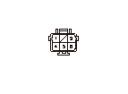
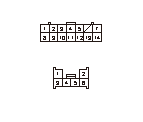

DTC B2088
DTC B2088:
R.元位置スイッチ回路の断線、短絡
再現テスト
1-1
HDSをデータ リンク カプラに接続する
1-2
イグニッション スイッチをON（
II
）にする
1-3
HDSでDTCをクリアする
1-4
運転席のパワー スライド ドア メイン スイッチをONにする
1-5
運転席のR.パワー スライド ドア スイッチのオープン/クローズ操作でR.パワー スライド ドアの全開、全閉を3回繰返す
1-6
“テスト モード メニュー”でDTCを確認する
◆ DTC B2088を表示するか
YES
-
ステップ
2
へ進む
NO
-
一過性故障、現在システムは正常
R.元位置スイッチ（CLMP）の内部短絡点検
-1
イグニッション スイッチをOFFにする
-2
R.スライド ドア クローザ アッセンブリからBカプラ（6P）の接続を外す
-3
R.スライド ドアを中間まで開く
-4
R.スライド ドア クローザ アッセンブリBカプラ（6P）のNo.5端子とNo.6端子間の導通を点検する
◆ 導通があるか
YES
-
R.元位置スイッチのON故障、R.スライド ドアクローザ アッセンブリを交換する
NO
-
ステップ
3
へ進む

R.パワー スライド ドア コントロール ユニットとR.元位置スイッチ間（CLMP）のボディ短絡点検
-1
R.パワー スライド ドア コントロール ユニットからAカプラ（14P）の接続を外す
-2
R.パワー スライド ドア コントロール ユニットAカプラ（14P）のNo.3端子とボディ アース間の導通を点検する
◆ 導通があるか
YES
-
コードのボディ短絡
NO
-
ステップ
4
へ進む
R.パワー スライド ドア コントロール ユニットとR.元位置スイッチ間（CLMP、FGND）の断線点検
4-1
R.パワー スライド ドア コントロール ユニットAカプラ（14P）のNo.3端子とR.スライド ドア クローザ アッセンブリ Bカプラ（6P）のNo.6端子間、R.パワー スライド ドア コントロール ユニットBカプラ（20P）のNo.17端子とR.スライド ドア クローザ アッセンブリBカプラ（6P）のNo.5端子間の導通を点検する
◆ 導通があるか
YES
-
ステップ
5
へ進む
NO
-
コードの断線

R.元位置スイッチ（CLMP）の出力確認
-1
R.パワー スライド ドア コントロール ユニットのカプラを接続する
-2
イグニッション スイッチをON（
II
）にする
-3
R.パワー スライド ドア コントロール ユニットAカプラ（14P）のNo.3端子とBカプラ（20P）のNo.17端子間で電圧を測定する
◆ 約12Vあるか
YES
-
R.元位置スイッチ不良、R.スライド ドア クローザ アッセンブリを交換する
NO
-
R.パワー スライド ドア コントロール ユニット不良